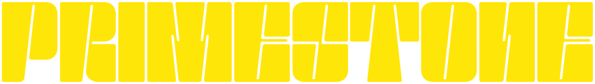
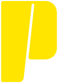
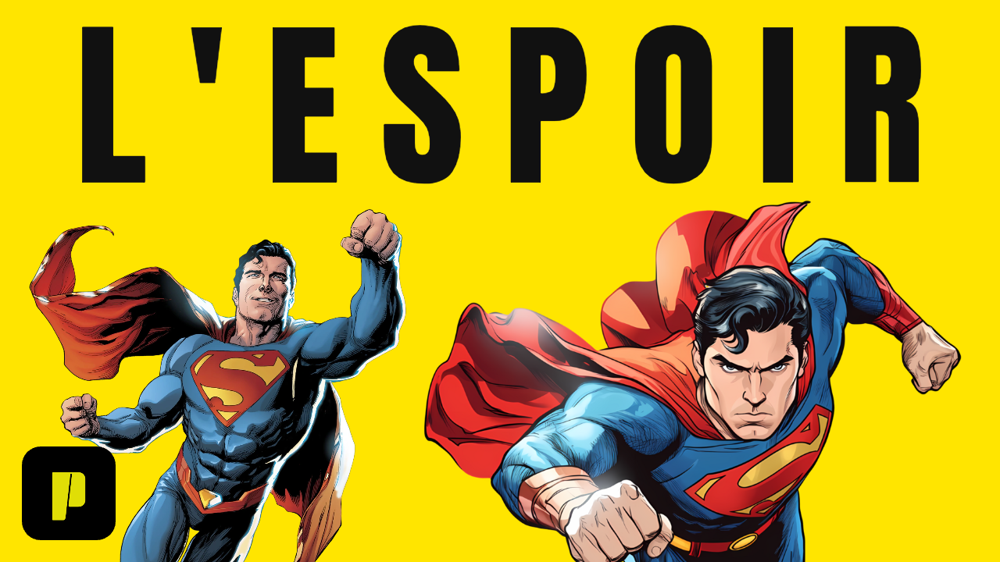
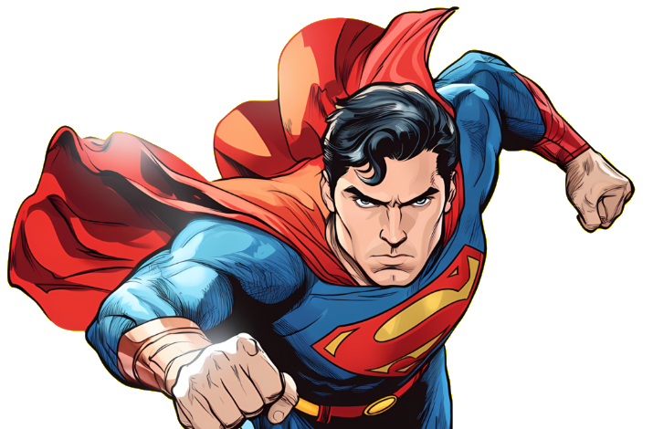

Ce que l'identité actuelle raconte, ce qu'il faut garder, et trois routes pour en faire un média comics de référence.
Audit du logo



Trois jaunes différents dans trois fichiers
#E0DE06Icône P. Tire vers l'olive, paraît terne à côté des deux autres.#FFF503Logotype. Jaune citron, très lumineux sur noir.#FFE500Miniature. Jaune « process », le plus chaud et le plus imprimable.| Construction | Lettres monolithiques à fût vertical, coins à faible rayon, chaque lettre fendue par une incision oblique (≈ 8° vers la droite). Cette incision est la vraie signature : elle évoque la taille de pierre (Primestone), la ligne de vitesse et le trait d'encre d'un lettreur. |
|---|---|
| Proportions | Logotype très horizontal, ratio ≈ 7,3 : 1. Approche serrée, presque une barre continue. Excellent en bandeau, fragile en petit : sous ~120 px de large, les incisions bouchent. |
| Typographie | Dessin sur mesure, stencil à empattements nuls, contreformes réduites (R, O, N). Le N et le E sont stylisés au point de lire « PRIMESTOHE » au premier coup d'œil. Le slogan est en Open Sans, sans lien avec le logotype. |
| Symbolique | Bloc, pierre, impact, solidité. Le P seul fonctionne comme un sceau : il rappelle la case de coin des couvertures de comics (le « corner box »). C'est un atout que vous n'exploitez pas encore. |
| Couleur | Jaune et noir : contraste maximal, code de signalisation, mémorisable. Aucune valeur de référence fixée (voir ci-contre). |
| Déclinaisons | Existantes : P seul, logotype + slogan. Manquent : version réduite, version monochrome officielle, zone de protection, taille minimale, version animée, filigrane vidéo. |
- Le couple jaune/noir comme territoire propriétaire.
- L'incision oblique, à transformer en motif graphique (barre, transition, cadre).
- L'icône P en carré arrondi : déjà reconnaissable dans le coin des miniatures.
- Fixer un seul jaune de référence (proposition :
#FFE500) et ses équivalents CMJN/Pantone. - Retoucher le N et le E du logotype pour la lisibilité, sans changer le style. Intervention chirurgicale, pas une refonte.
- Remplacer Open Sans par une typo qui dialogue avec le logotype.
- Dessiner une version « petite taille » avec incisions élargies.
Audit de la miniature « L'Espoir »

1 2 3 4 5- Titre en un mot, pleine largeur. Lisible à toute taille, fort. Mais l'interlettrage très large et le centrage donnent un ton d'affiche générique ; le titre et le personnage se disputent l'attention à poids égal.
- Fond jaune plein. C'est votre meilleur outil de reconnaissance dans un fil YouTube. À conserver comme couleur d'appel, pas forcément sur 100 % des miniatures.
- Deux illustrations de facture différente. L'une encrée avec un liseré blanc d'autocollant, l'autre plus lisse, sans liseré. Le traitement du détourage n'est pas unifié, et le rendu lisse de droite mérite une vérification de source et de droits.
- Personnage en action, regard vers le spectateur. Bon choix éditorial. Il manque un plan de profondeur : tout est au même niveau, posé sur l'aplat.
- Pastille P en bas à gauche. Bonne idée de signature, mais c'est le coin où YouTube n'affiche rien de gênant… alors que le bas à droite est masqué par la durée. Gardons-la, en la fixant au gabarit.
- Contraste immédiat, lisible en vignette 168 × 94 px.
- Un concept par vidéo résumé en un mot (« L'Espoir ») : posture d'analyse, pas d'actualité racoleuse.
- Illustrations de comics mises en avant, pas de visage YouTubeur.
- Aucun indicateur de format (analyse, actu, théorie…) : le spectateur ne sait pas quel type de vidéo il ouvre.
- Pas de grille : la marge, la taille du titre et la place du P ne sont pas fixées.
- Aucun crédit d'artiste ou de source. Pour un média qui veut faire référence, c'est un marqueur de sérieux (et de respect envers les auteurs).
- Une seule miniature fournie : je ne peux pas juger la cohérence entre vidéos. Envoyez-m'en 6 à 10 pour la phase 4.
Ce que Primestone communique aujourd'hui
Une marque directe, sûre d'elle, très visible, avec un vrai capital graphique (le logotype et le jaune). Elle se lit pour l'instant comme une chaîne plutôt que comme un média : il manque le système qui organise les contenus, les crédits, les rubriques et la hiérarchie qu'on trouve dans un magazine. L'enjeu n'est pas de changer d'image, c'est d'ajouter l'architecture éditoriale autour de ce qui existe.
Ces quatre éléments sont conservés dans les trois directions. Ce qui change entre elles : le terrain culturel de référence, le traitement de l'illustration et le degré de rupture avec l'existant.
Signal
On radicalise ce que vous avez déjà. Le jaune devient un système de signalisation éditoriale : une grille fixe, une étiquette de rubrique en code mono, un titre-concept massif aligné à gauche, l'illustration détourée avec un liseré d'encre noire (au lieu du blanc) pour rester dans le langage du comic. L'incision oblique sert de séparateur et de transition vidéo.
Le plus faible. Un gabarit Photoshop avec calques verrouillés, 15–20 min par miniature.

 Analyse01/08
Analyse01/08tombait ?
commencer
- Votre audience vous reconnaît dès le premier jour.
- Rubriques lisibles en un coup d'œil.
- Le système le plus rapide à produire seul.
- Peut rester « YouTube » si la grille n'est pas respectée.
- Moins de registre pour les sujets graves ou patrimoniaux.
Kiosque
Primestone devient une publication. Chaque vidéo est traitée comme un numéro : bandeau de titre (masthead), numéro d'épisode, date, case-cadre pour l'illustration comme une case de planche. Un serif italique apporte la voix critique, le jaune passe en surligneur, une trame de points Ben-Day très discrète rappelle l'impression des comics. Le registre le plus « grand magazine culturel ».
Moyen. Le gabarit est simple, mais demande un vrai travail de titrage (le serif exige des formules plus écrites).
N°042 · NOV. 2026 · ANALYSEDC COMICS
N°042- Crédibilité immédiate auprès des éditeurs et auteurs.
- Idéal pour carrousels, chronologies, fiches personnages et site.
- Le crédit d'artiste est intégré au gabarit.
- Taux de clic YouTube potentiellement plus faible : fond clair et titres longs.
- Rupture visible avec vos miniatures actuelles.
Multivers
Le catalogue façon plateforme de streaming. Fond nuit profond, l'illustration éclairée comme une affiche de film, le jaune réduit à une source de lumière (halo, filet, logo). Titres en capitales larges et serrées, sous-titres espacés. Chaque grande saga reçoit une « affiche » déclinable en vignette, bannière et carte de site.
Le plus élevé. L'éclairage et la profondeur demandent des retouches par visuel, et des illustrations en haute définition.
- Image la plus « premium », prête pour l'international.
- Parfait pour un site-catalogue et les adaptations ciné/séries.
- Le jaune recule : vous perdez votre signal dans le fil YouTube, où beaucoup de miniatures sont déjà sombres.
- Proche des codes officiels des studios : moins de voix propre.
Les trois routes face à vos objectifs
| Critère | A · Signal | B · Kiosque | C · Multivers |
|---|---|---|---|
| Reconnaissance dans le fil YouTube | |||
| Posture de média éditorial | |||
| Valorisation des illustrations | |||
| Continuité avec l'existant | |||
| Production en solo, petit budget | |||
| Extension site, carrousels, infographies |
A pour la façade, B pour la profondeur
Signal comme colonne vertébrale : miniatures, habillage vidéo, intro/outro, réseaux. Il garde votre capital de reconnaissance et reste tenable seul. On lui greffe deux éléments de Kiosque : la numérotation des épisodes (N°042) et le crédit d'artiste systématique, plus le serif italique réservé aux formats longs (carrousels, chronologies, fiches personnages, site). Multivers reste en réserve pour un format spécial : événements Marvel/DC et dossiers ciné.
C'est une recommandation, pas une décision : vous pouvez retenir une direction pure.
Vos décisions
- Direction : A, B, C, ou l'hybride A + B recommandé ?
- Jaune de référence : validez-vous
#FFE500pour tous les supports ? - Logotype : m'autorisez-vous à retoucher le N et le E pour la lisibilité, ou le logo est-il figé ?
- Liseré des illustrations : encre noire (proposé) ou blanc actuel ?
- Corpus : pouvez-vous m'envoyer 6 à 10 autres miniatures et, si vous les avez, les fichiers sources du logo (AI, SVG ou PDF vectoriel) ?
- Outils : confirmez-vous Photoshop, Illustrator, Premiere Pro et After Effects ? Sinon, je prévois des alternatives gratuites (Photopea, Figma, DaVinci Resolve).